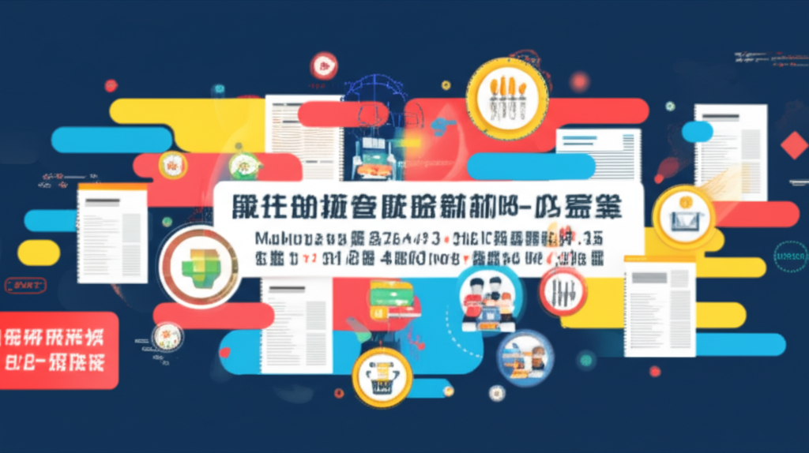

# 近期新聞重點：全球健康、科技與教育趨勢
## 引言
近期全球新聞涵蓋範圍廣泛，從無人機產業的合作、機器人技術的發展，到健康減重、端午節飲食控制，以及教育領域的活動等等，都反映了當前社會關注的重要議題。本文將深入探討這些新聞，聚焦科技、健康和教育三大面向，分析其背後所代表的趨勢和潛在影響。
## 主體內容
### 第一點：科技發展與國際合作
近期新聞顯示，科技領域的發展日新月異，尤其是無人機和機器人技術。台灣卓越無人機海外商機聯盟 (TEDIBOA) 赴美參展，與美國在台協會（AIT）處長谷立言的交流，體現了美台在產業上的密切合作與互補。這種合作預期將為雙方帶來經濟效益。此外，全球首個機器人拳王的誕生，也預示著機器人技術在戰場上的應用潛力。這些科技發展不僅影響著產業結構，也可能改變未來的戰爭型態。
### 第二點：健康意識的提升與體重管理
新聞中，關於健康減重的議題備受關注。從體重管理門診的普及到伴侶一起瘦身的研究，都顯示人們對健康的重視程度不斷提升。台灣初日診所內科暨減重專科醫師陳威龍指出，伴侶一同減重效果更好，體重控制不僅僅是個人行為，也成為一種生活方式的選擇。此外，端午節將至，營養師也提醒民眾注意飲食控制，避免攝取過多熱量，特別是對體重控制者而言，更需謹慎。糖尿病榮家也進行衛教，提醒住民控制血糖，避免血糖過高帶來的健康問題。
### 第三點：教育領域的活動與資訊分享
教育領域的新聞也反映了多元化的發展。國立苗栗特殊教育學校分享了教職員工福利文教基金會的活動資訊，並提供內部控制、資安宣導、館藏查詢等服務，以提升教育品質。臺北市立南港高級工業職業學校則關注鳥類保護議題，避免選用不當的防鳥膠造成野生鳥類誤傷。HyRead ebook 電子書店提供了豐富的電子書資源，方便讀者隨時隨地閱讀。這些資訊的分享和活動的舉辦，有助於促進教育的普及和發展。
## 結論
總體而言，近期新聞反映了全球在科技創新、健康意識和教育發展上的努力。科技領域的國際合作與機器人技術的發展，可能帶來產業變革和軍事影響；健康領域的體重管理與飲食控制，體現了人們對生活品質的追求；教育領域的活動與資訊分享，則有助於促進社會的進步和發展。這些新聞不僅提供了豐富的資訊，也引導我們思考未來社會的發展方向。